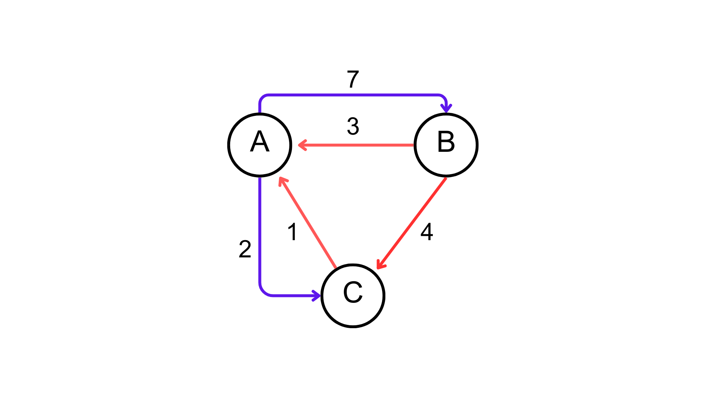

Imagine saber todos os caminhos possíveis entre dois pontos de um grafo, e saber qual o menor caminho entre eles. Esse é o problema dos menores caminhos, e o algoritmo de Floyd-Warshall é uma solução para esse problema.
Grafos como Matrizes

Este é um exemplo de grafo muito utilizado, existem 4 nodos que estão conectados por caminhos com pesos diferentes. O nosso computador, porém, não têm a capacidade de receber como input este grafo, ele têm que ser guardado em um formato de dados que represente todos os nodos e seus pesos.
Este formato pode ir desde listas, pilhas, filas… porém nenhum destes modelos consegue representar todas as possibilidades de expansão de um grafo, por isso, o modelo mais utilizado é o de Matrizes.
Mas como que uma matriz pode representar um grafo? Para isso existem regras de construção:
A matriz deve ser quadrada, ou seja, o número de linhas deve ser igual ao número de colunas.
A distância/peso de um Node para ele mesmo é igual a 0.
Se não existe uma aresta entre dois Nodes, o peso é igual a zero.
Se existe uma aresta entre dois Nodes, o peso é igual ao peso da aresta.
A 3° regra é uma excessão, que será utilizada para melhor entendimento dos conceitos inicias, posteriormente será tratada novamente com outra definição.
Dica: Construa a Matriz das linhas para as colunas. Então se estiver na Coluna A e Linha B, o peso da aresta é o peso da flecha que liga o Node A ao Node B - e não o inverso.
Checkpoint
Qual a matriz de pesos do Grafo abaixo?
Gabarito
Se conseguiu completar corretamente, quer dizer que já entendeu os objetivos, e pode seguir para o próximo Checkpoint. Se não compreendeu é importante ler as regras novamente e ver se ao construir sua Matriz seguiu todas elas.
Com todos os pesos dos nodos em uma matriz podemos encontrar o caminho de menor peso entre dois nodos. Pensei na melhor forma de encontrar o menor caminho e aplique este formato nos checkpoints abaixo.
Checkpoint
Qual o menor caminho entre o Nodo A e B?
Gabarito
O menor caminho entre A e B é ir pelo nodo C que têm peso 5, e depois de C chegar em B, tendo um peso total de 6 - contra o caminho convencional de 7.
Checkpoint
Qual o menor caminho entre o nodo B e C?
Gabarito
O menor caminho entre B e C é ir pelo nodo A que têm peso 5 e depois ir para o nodo C com um peso total de 6 - contra o caminho convencional de 10.
Você deve estar achando o problema muito fácil, basta analisarmos os nodos e seus pesos e encontrarmos o caminho com menor peso. Porém, perceba que estamos apenas buscando pesos entre dois nodos de um Grafo com 3 nodos. Se aumentarmos o tamanho do problema e pedirmos para encontrar todos os menores caminhos em todos os nodos consumirá mais tempo.
Checkpoint
Qual o menor caminho entre todos os nodos?
Gabarito
Tenho certeza que você nem tentou resolver e já abriu o gabarito. Mas tudo bem, não esperamos que você resolva este Checkpoint, se quiser algo realmente dificil, desça até os desafios.
Você deve ter percebido que é extremamente trabalhoso encontrar o menor caminho para cada um dos casos, e conforme o grafo se torna mais complexo, se torna mais dificil encontrar. Por isso, o algoritmo de Floyd-Warshall foi criado, para encontrar todos os menores caminhos de um grafo de forma eficiente - e entregar a resposta em uma matriz de mesmo tamanho que a inicial.
O que é o Algoritmo Floyd-Warshall
Floyd-Warshall é um algoritmo que utiliza de programação dinâmica para encontrar todos os caminhos entre todos os Nodos de um Grafo/Matriz, dos encontrados seleciona os menores e guarda eles em uma Matriz de mesma dimensão da inicial.
Abaixo está um exemplo de como este algoritmo funciona, demonstrando uma das procuras dele pelo menor caminho, e construindo a matriz de distâncias passo a passo.
O primeiro loop foi feito individualmente, e como é possível ver o algoritmo “trava” em um dos nodos - inicialmente o A - e calcula todos os caminhos dele para os outros nodos, replicando este processo até ter percorrido todos os possíveis caminhos em todos os nodos.
Para entender como o algoritmo funciona, é necessário entender como ele é implementado a nível de código, visto que a nível teórico já foi explicado.
função floydWarshall recebe Grafo:
distância = Grafo
Para k de 0 até tamanho da matriz:
Para i de 0 até tamanho da matriz:
Para j de 0 até tamanho da matriz:
Se distância[i][j] > distância[i][k] + distância[k][j]:
distância[i][j] = distância[i][k] + distância[k][j]
retorne distância
Checkpoint
Olhando apenas para esse pseudocódigo, você consegue dizer qual a complexidade de tempo desse algoritmo?
Gabarito
Como o algoritmo utiliza 3 loops de for para percorrer todos os elementos da matriz, a complexidade de tempo é O(n³).
Checkpoint
E qual a complexidade de espaço? Lembre-se que o algoritmo recebe uma matriz de pesos e retorna uma matriz de distâncias.
Gabarito
A complexidade de espaço é O(n²), pois o algoritmo utiliza uma matriz de distâncias de tamanho n².
Agora que todos os conceitos sobre Floyd-Warshall foram demonstrados, você já viu a teória, sabe transformar um Grafo em Matriz e têm ideia de como implementar o código. Vamos voltar para tratar das regras e estabelecer elas definitivamente, principalmente a 3° Regra.
Regras:
Regras
Teória
Prática
1°
Matriz deve ser quadrada
Deve navegar todas as possibilidades
2°
A -> A = 0
Não modificar input diretamente
3°
Se não existe aresta peso = infinito
4°
Se existir aresta peso = peso da aresta
Você deve ter percebido que agora ao invês de considerarmos igual a zero, estamos utilizando a notação infinito para representar que o custo de percorrer este caminho é extremamente alto - visto que não existe alternativa.
Outra regra adicionada recentemente é quanto a números negativos, que não serão tratados a fundo neste handout, porém é importante você saber que um dos pontos diferenciais do Algoritmo de Floyd-Warshall é que ele consegue tratar arestas com pesos negativos normalmente. Então se você se deparar com alguma situação destar apenas implemente o exercício normalmente que o resultado deve ser o esperado.
Implementação do Algoritmo
Agora que você já sabe como o algoritmo funciona, e quais são as regras que devem ser seguidas, vamos implementar o algoritmo.
int **floydWarshall(int grafo[][], int n) {
int **dist = grafo;
for (int k = 0; k < n; k++) {
for (int i = 0; i < n; i++) {
for (int j = 0; j < n; j++) {
if (dist[i][j] > dist[i][k] + dist[k][j]) {
dist[i][j] = dist[i][k] + dist[k][j];
}
}
}
}
return dist;
}
Nesta implementação é importante manter em mente que a função floydWarshall recebe um matriz - representada por [][], mas que também pode ser representada por ** - e o tamanho da matriz, que é representado por n. Devolvendo outra matriz de mesmo tamanho de distâncias.
Exercícios
Desafios
Desafio 1 - Google Maps
Imagine que você trabalha na equipe de desenvolvimento do Google Maps. Recentemente, a Google vem recebendo muitas reclamações de usuários em relação à performance do aplicativo. Portanto, Você recebeu a tarefa de implementar o algoritmo de Floyd-Warshall em uma linguagem compilada, mais rápida do que a atualmente utilizada, para calcular a distância entre todos os pares de pontos de determinadas regiões. Como você é experiente em linguagem C, resolveu implementar o algoritmo nessa linguagem.
Desenvolva uma função floydWarshall, que recebe como argumentos uma matriz de adjacência grafo e o número de vértices n, e retorna a matriz de distâncias dist.
Dica: Parta do código em Python apresentado anteriormente. Como ficariam os tipos de dados?
Gabarito
int **floydWarshall(int grafo[][], int n) {
int **dist = grafo;
for (int k = 0; k < n; k++) {
for (int i = 0; i < n; i++) {
for (int j = 0; j < n; j++) {
if (dist[i][j] > dist[i][k] + dist[k][j]) {
dist[i][j] = dist[i][k] + dist[k][j];
}
}
}
}
return dist;
}
Desafio 2 - Rede social
A imagem abaixo representa um grafo de uma pequena rede desenvolvida entre amigos, para uma disciplina de Engenharia da Computação do Insper. Nele, cada amigo é modelado por um vértice e cada conexão entre amigos é modelada por uma aresta. A distância entre dois amigos é dada pelo número de arestas que separam os dois vértices.
O professor dessa disciplina, que é muito querido pelos alunos, quer saber qual é o par de amigos que está mais distante um do outro. Para isso vamos utilizar o algoritmo de Floyd Warshall para calcular a matriz de distâncias entre todos os pares de amigos.
Qual a dimensionalidade da matriz de adjacência? Represente a matriz de distâncias na PRIMEIRA iteração do algoritmo de Floyd Warshall, e no FINAL da última iteração (com todas as distâncias calculadas).
Gabarito
A matriz tem dimensionalidade 7x7, pois existem 7 vértices.
Após a primeira iteração, a matriz é a mesma da matriz de adjacência: